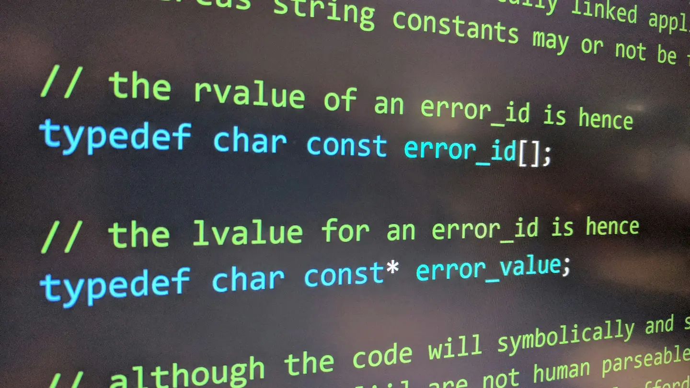

Normalização de banco de dados: da 1FN à 5FN e FNBC
Entenda dependências funcionais, multivaloradas e de junção com exemplos progressivos.
Da montagem de um computador à inteligência artificial: conteúdos claros sobre hardware, software, internet, segurança, programação, dados, nuvem e carreira em TI.
Escolha um assunto e avance no seu ritmo.
18 artigos encontrados
Entenda dependências funcionais, multivaloradas e de junção com exemplos progressivos.
Combine tabelas relacionadas com exemplos progressivos de clientes, pedidos e produtos.
Aprenda a identificar entidades, atributos, relacionamentos e cardinalidades antes de criar tabelas.

Entenda como as chaves identificam registros, conectam tabelas e protegem a integridade dos dados.
Conheça o mapa completo da Tecnologia da Informação e entenda como suas áreas se conectam.
Entenda como máquinas identificam padrões, geram conteúdo e auxiliam decisões sem cair em exageros.

Aprenda a reconhecer golpes, proteger contas e reduzir riscos no celular e no computador.
Veja o papel do processador, memória RAM, armazenamento e placa-mãe usando uma comparação simples.

Descubra o que realmente significa usar a nuvem e como ela sustenta aplicativos e empresas.

Veja como a repetição funciona, por que cada parte existe e como evitar os erros mais comuns.
Compare as funções dos três servidores usando situações que acontecem em empresas e escolas.

Aprenda a criar, consultar, atualizar e excluir dados com exemplos simples e uma atividade ao final.
Entenda como o software principal administra hardware, processos, memória, arquivos e usuários.

Acompanhe o caminho de uma página e compreenda DNS, IP, pacotes, roteadores e servidores.

Aprenda o propósito de commits, branches e sincronização usando um fluxo seguro de trabalho.
Filtre, combine condições, ordene e limite resultados com exemplos progressivos.
Planeje cópias resistentes a falhas e aprenda por que restaurar é o teste definitivo.

Conheça diferentes caminhos profissionais e construa um plano de experimentação em 30 dias.
Nenhum conteúdo encontrado. Tente outra palavra ou categoria.
O Código em Sala mostra a TI como um ecossistema: computadores, aplicativos, internet, dados, segurança e inteligência artificial trabalhando juntos. Cada artigo é pensado para quem quer compreender tecnologia, e não apenas decorar comandos.